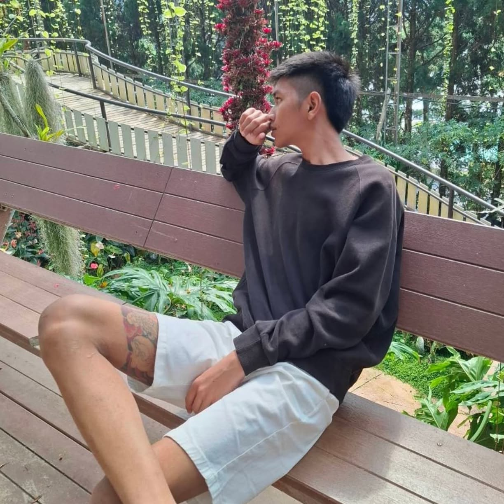

ชื่อ : ภูวณัฎฐ์ รอดลือนาม
ชื่อเล่น : ..............
วันเกิด : ..............
อายุ : 18 ปี
สัญชาติ : ไทย
ระดับชั้น : มัธยมศึกษาปีที่ 6
โรงเรียน : ....................................
แผนการเรียน : ....................................
เกรดเฉลี่ย : ......
สวัสดีครับ ผมเป็นนักเรียนชั้นมัธยมศึกษาปีที่ 6 มีความสนใจด้านการพัฒนาเว็บไซต์และการเขียนโปรแกรม เว็บไซต์นี้จัดทำขึ้นเพื่อใช้เป็นแฟ้มสะสมผลงาน (Portfolio) สำหรับรวบรวมข้อมูลส่วนตัว ประวัติการศึกษา และผลงานต่าง ๆ ที่ได้เรียนรู้ตลอดช่วงการศึกษา